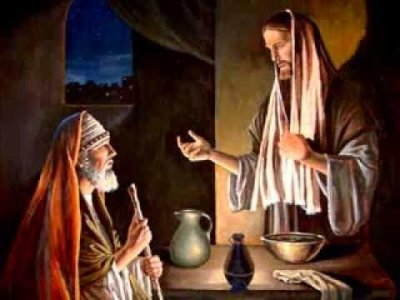

HODIE /  Lunedì della II settimana di Pasqua
Lunedì della II settimana di Pasqua
ANTIFONA / Cristo risorto dai morti non muore più; la morte non ha più potere su di lui. Alleluia. (Rm 6,9)
CONFITEOR / Confesso a Dio onnipotente e a voi, fratelli e sorelle, che ho molto peccato in pensieri, parole, opere e omissioni, per mia colpa, mia colpa, mia grandissima colpa. E supplico la beata sempre vergine Maria, gli angeli, i santi e voi, fratelli e sorelle, di pregare per me il Signore Dio nostro. Dio onnipotente abbia misericordia di noi, perdoni i nostri peccati e ci conduca alla vita eterna. Signore Pietà, Cristo pietà.
GLORIA / Gloria a Dio nell'alto dei cieli e pace in terra agli uomini di buona volontà. Noi ti lodiamo, ti benediciamo, ti adoriamo, ti glorifichiamo, ti rendiamo grazie per la tua gloria immensa, Signore Dio, Re del cielo, Dio Padre onnipotente. Signore, figlio unigenito, Gesù Cristo, Signore Dio, Agnello di Dio, Figlio del Padre, tu che togli i peccati dal mondo abbi pietà di noi; tu che togli i peccati dal mondo, accogli la nostra supplica; tu che siedi alla destra del Padre, abbi pietà di noi. Perché tu solo il Santo, tu solo il Signore, tu solo l'Altissimo, Gesù Cristo, con lo Spirito Santo: nella gloria di Dio Padre. Amen.
COLLETTA / Dio onnipotente, a noi che, rinnovati dai sacramenti pasquali, abbiamo abbandonato la somiglianza con il primo uomo, concedi di essere conformati alla tua immagine di creatore. Per il nostro Signore Gesù Cristo, tuo Figlio, che è Dio, e vive e regna con te, nell'unità dello Spirito Santo, per tutti i secoli dei secoli.
LETTURA1 / Terminata la preghiera, tutti furono colmati di Spirito Santo e proclamavano la parola di Dio con franchezza / Dagli Atti degli Apostoli (At 4,23-31) / In quei giorni, rimessi in libertà, Pietro e Giovanni andarono dai loro fratelli e riferirono quanto avevano detto loro i capi dei sacerdoti e gli anziani. Quando udirono questo, tutti insieme innalzarono la loro voce a Dio dicendo: «Signore, tu che hai creato il cielo, la terra, il mare e tutte le cose che in essi si trovano, tu che, per mezzo dello Spirito Santo, dicesti per bocca del nostro padre, il tuo servo Davide: "Perché le nazioni si agitarono e i popoli tramarono cose vane? Si sollevarono i re della terra e i prìncipi si allearono insieme contro il Signore e contro il suo Cristo"; davvero in questa città Erode e Ponzio Pilato, con le nazioni e i popoli d'Israele, si sono alleati contro il tuo santo servo Gesù, che tu hai consacrato, per compiere ciò che la tua mano e la tua volontà avevano deciso che avvenisse. E ora, Signore, volgi lo sguardo alle loro minacce e concedi ai tuoi servi di proclamare con tutta franchezza la tua parola, stendendo la tua mano affinché si compiano guarigioni, segni e prodigi nel nome del tuo santo servo Gesù». Quand'ebbero terminato la preghiera, il luogo in cui erano radunati tremò e tutti furono colmati di Spirito Santo e proclamavano la parola di Dio con franchezza. / Parola di Dio.
PSALMUS / (Sal 2) Beato chi si rifugia in te, Signore / Perché le genti sono in tumulto e i popoli cospirano invano? Insorgono i re della terra e i prìncipi congiurano insieme contro il Signore e il suo consacrato: «Spezziamo le loro catene, gettiamo via da noi il loro giogo!». / Ride colui che sta nei cieli, il Signore si fa beffe di loro. Egli parla nella sua ira, li spaventa con la sua collera: «Io stesso ho stabilito il mio sovrano sul Sion, mia santa montagna». / Voglio annunciare il decreto del Signore. Egli mi ha detto: «Tu sei mio figlio, io oggi ti ho generato. Chiedimi e ti darò in eredità le genti e in tuo dominio le terre più lontane. Le spezzerai con scettro di ferro, come vaso di argilla le frantumerai».
ACCLAMATIO / Alleluia, Alleluia / Se siete risorti con Cristo, cercate le cose di lassù, dove è Cristo, seduto alla destra di Dio (Col 3,1) / Alleluia.
VANGELO / Se uno non nasce da acqua e Spirito, non può entrare nel regno di Dio / Dal Vangelo secondo Giovanni (Gv 3,1-8) / Vi era tra i farisei un uomo di nome Nicodèmo, uno dei capi dei Giudei. Costui andò da Gesù, di notte, e gli disse: «Rabbì, sappiamo che sei venuto da Dio come maestro; nessuno infatti può compiere questi segni che tu compi, se Dio non è con lui». Gli rispose Gesù: «In verità, in verità io ti dico, se uno non nasce dall'alto, non può vedere il regno di Dio». Gli disse Nicodèmo: «Come può nascere un uomo quando è vecchio? Può forse entrare una seconda volta nel grembo di sua madre e rinascere?». Rispose Gesù: «In verità, in verità io ti dico, se uno non nasce da acqua e Spirito, non può entrare nel regno di Dio. Quello che è nato dalla carne è carne, e quello che è nato dallo Spirito è spirito. Non meravigliarti se ti ho detto: dovete nascere dall'alto. Il vento soffia dove vuole e ne senti la voce, ma non sai da dove viene né dove va: così è chiunque è nato dallo Spirito». / Parola del Signore.
CREDO / Credo in un solo Dio, Padre onnipotente, creatore del cielo e della terra, di tutte le cose visibili e invisibili. Credo in un solo Signore, Gesù Cristo, unigenito Figlio di Dio, nato dal Padre prima di tutti i secoli: Dio da Dio, Luce da Luce, Dio vero da Dio vero, generato, non creato, della stessa sostanza del Padre; per mezzo di lui tutte le cose sono state create. Per noi uomini e per la nostra salvezza discese dal cielo, e per opera dello Spirito Santo si è incarnato nel seno della Vergine Maria e si è fatto uomo. Fu crocifisso per noi sotto Ponzio Pilato, morì e fu sepolto. Il terzo giorno è risuscitato, secondo le Scritture, è salito al cielo, siede alla destra del Padre. E di nuovo verrà, nella gloria, per giudicare i vivi e i morti, e il suo regno non avrà fine. Credo nello Spirito Santo, che è Signore e dà la vita, e procede dal Padre e dal Figlio. Con il Padre e il Figlio è adorato e glorificato, e ha parlato per mezzo dei profeti. Credo la Chiesa, una santa cattolica e apostolica. Professo un solo battesimo per il perdono dei peccati. Aspetto la risurrezione dei morti e la vita del mondo che verrà. Amen.
OREMUS / La nostra realtà di rigenerati dallo Spirito nelle acque battesimali per una vita nuova, che ci rende partecipi del regno di Dio, costituisce il titolo più grande della nostra dignità. Invochiamo con fede il Signore, dicendo: Fa' che diventiamo ciò che siamo, Signore. / Per tutti i rinati dall'acqua e dallo Spirito, perchè siano fedeli e coerenti alla loro dignità battesimale. Preghiamo: / Per tutti coloro che, come Nicodemo, cercano la verità, perchè riconoscano in Cristo l'unico maestro che compie i segni di Dio. Preghiamo: / Per le famiglie cristiane che hanno battezzato i loro figli, perchè assumano coerentemente gli impegni di educazione alla fede e di esemplarità di vita. Preghiamo: / Per la nostra comunità, perchè, consapevole che lo Spirito agisce in tutti, sappia vedere, apprezzare e valorizzare i doni di ogni suo membro. Preghiamo: / Per noi qui presenti, perchè la nostra preghiera individuale si ispiri sempre al modello della preghiera biblica e liturgica, per ottenere l'efficacia del dono dello Spirito. Preghiamo: / Per i bimbi che oggi nascono alla vita. / Per gli insegnanti. / O Dio nostro Padre, che ci hai rivelato per mezzo del tuo unico Figlio, generato dal tuo amore, il mistero e la grandezza della nostra rinascita dallo Spirito, concedici di essere fedeli alla nostra dignità di tuoi figli. Per Cristo nostro Signore. Amen.
OFFERTORIO / Accogli, o Signore, i doni della tua Chiesa in festa e poiché le hai dato il motivo di tanta gioia, donale anche il frutto di una perenne letizia. Per Cristo nostro Signore. ♦ Ti presentiamo con gioia, o Signore, i doni della redenzione eterna e ti preghiamo: concedi a noi di venerarli e di offrirli con fede, perché siano fonte di salvezza per tutti i rinati nel Battesimo. Per Cristo nostro Signore.
PREFAZIO / La vita nuova in Cristo / È veramente cosa buona e giusta, nostro dovere e fonte di salvezza, proclamare sempre la tua gloria, o Signore, e soprattutto esaltarti in questo tempo nel quale Cristo, nostra Pasqua, si è immolato. Per mezzo di lui rinascono a vita nuova i figli della luce, e si aprono ai credenti le porte del regno dei cieli. In lui morto è redenta la nostra morte, in lui risorto tutta la vita risorge. Per questo mistero, nella pienezza della gioia pasquale, l’umanità esulta su tutta la terra e le schiere degli angeli e dei santi cantano senza fine l’inno della tua gloria: Santo, Santo, Santo il Signore Dio dell’universo. I cieli e la terra sono pieni della tua gloria. Osanna nell’alto dei cieli. Benedetto colui che viene nel nome del Signore. Osanna nell’alto dei cieli.
COMMUNIO / Venne Gesù, stette in mezzo ai suoi discepoli e disse loro: «Pace a voi!». Alleluia. (Gv 20,19) ♦ Se uno non nasce da acqua e Spirito, non può entrare nel regno di Dio. Alleluia. (Gv 3,5)

GRATIAS / Conferma, o Dio, l’opera della redenzione e proteggi coloro che hai chiamato a far parte della santa Chiesa mediante i sacramenti della vita eterna. Per Cristo nostro Signore. ♦ Guarda con bontà, o Signore, il tuo popolo che ti sei degnato di rinnovare con questi sacramenti di vita eterna, e donagli di giungere alla risurrezione incorruttibile del corpo, destinato alla gloria. Per Cristo nostro Signore.
LECTIO
EVANGELIZO1 /
Messale romano, Preghiera per la benedizione dell'acqua battesimale durante la Veglia Pasquale, Rinascere da acqua e da Spirito / O Dio, per mezzo dei segni sacramentali, tu operi con invisibile potenza le meraviglie della salvezza; e in molti modi, attraverso i tempi, hai preparato l'acqua, tua creatura, ad essere segno del Battesimo. Fin dalle origini il tuo Spirito si librava sulle acque perché contenessero in germe la forza di santificare; e anche nel diluvio hai prefigurato il battesimo, perché, oggi come allora, l'acqua segnasse la fine del peccato e l'inizio della vita nuova. Tu hai liberato dalla schiavitù i figli di Abramo, facendoli passare illesi attraverso il Mar Rosso, perché fossero immagine del futuro popolo dei battezzati. Infine, nella pienezza dei tempi, il tuo Figlio, battezzato da Giovanni nell'acqua del Giordano, fu consacrato dallo Spirito Santo; innalzato sulla croce, egli versò dal suo fianco sangue e acqua, e dopo la sua risurrezione comandò ai discepoli: «Andate, annunziate il Vangelo a tutti i popoli, e battezzateli nel nome del Padre e del Figlio e dello Spirito Santo» (Mt 28,19). Ora, Padre, guarda con amore la tua Chiesa e fa scaturire per lei la sorgente del Battesimo. Infondi in quest'acqua, per opera dello Spirito Santo, la grazia del tuo unico Figlio, perché con il sacramento del Battesimo l'uomo, fatto a tua immagine, sia lavato dalla macchia del peccato, e dall'acqua e dallo Spirito Santo rinasca come nuova creatura. Discenda, Padre, in quest'acqua, per opera del tuo Figlio, la potenza dello Spirito Santo. Tutti coloro che in essa riceveranno il Battesimo, sepolti insieme con Cristo nella morte, con lui risorgano alla vita immortale. Per Cristo nostro Signore.
EVANGELIZO-21 / Messale romano / Orazioni dalla catechesi battesimale della Veglia pasquale / Un popolo rinato dall'acqua e dallo Spirito O Dio, padre dei credenti, che estendendo a tutti gli uomini il dono dell'adozione filiale, moltiplichi in tutta la terra i tuoi figli, e nel sacramento pasquale del Battesimo adempi la promessa fatta ad Abramo di renderlo padre di tutte le nazioni, concedi al tuo popolo di rispondere degnamente alla grazia della tua chiamata. Per Cristo nostro Signore. O Dio, anche ai nostri tempi vediamo risplendere i tuoi antichi prodigi: ciò che facesti con la tua mano potente per liberare un solo popolo dall'oppressione del faraone, ora lo compi attraverso l'acqua del Battesimo per la salvezza di tutti i popoli; concedi che l'umanità intera sia accolta tra i figli di Abramo e partecipi alla dignità del popolo eletto. Per Cristo nostro Signore. O Dio, che accresci sempre la tua Chiesa chiamando nuovi figli da tutte le genti, custodisci nella tua protezione coloro che fai rinascere dall'acqua del Battesimo, Per Cristo nostro Signore. O Dio, potenza immutabile e luce che non tramonta, volgi lo sguardo alla tua Chiesa, ammirabile sacramento di salvezza, e compi l'opera predisposta nella tua misericordia: tutto il mondo veda e riconosca che ciò che è distrutto si ricostruisce, ciò che è invecchiato si rinnova, e tutto ritorna alla sua integrità, in Colui che è principio di tutte le cose, Cristo, tuo Figlio e nostro Signore, Lui che vive e regna nei secoli dei secoli.
DiBruno1 /
Se uno non nasce da acqua e Spirito (Gv 3,1-8) / Le parole di Gesù sono chiare, inequivocabili, immodificabili. Esse dicono necessità senza eccezioni. Valgono per ogni figlio di Adamo, nessuno escluso: “In verità, in verità io ti dico, se uno non nasce da acqua e Spirito, non può entrare nel regno di Dio. Quello che è nato dalla carne è carne, e quello che è nato dallo Spirito è spirito”. A questa necessità Gesù aggiunge anche il comando ai suoi Apostoli. Così nel Vangelo secondo Matteo: “Gesù si avvicinò e disse loro: «A me è stato dato ogni potere in cielo e sulla terra. Andate dunque e fate discepoli tutti i popoli, battezzandoli nel nome del Padre e del Figlio e dello Spirito Santo, insegnando loro a osservare tutto ciò che vi ho comandato” (Mt 18,16-20). In Marco il comando è ancora più esplicito: “E disse loro: «Andate in tutto il mondo e proclamate il Vangelo a ogni creatura. Chi crederà e sarà battezzato sarà salvato, ma chi non crederà sarà condannato” (Mc 16,15-16). Se gli Apostoli non predicano Cristo nel suo mistero di morte e risurrezione e non battezzano nel suo nome, sono omissivi di un comandamento dato loro dal Signore. Essi sono responsabili di tutti coloro che si perdono per la loro mancata obbedienza. Questa gravissima responsabilità eterna è anche per ogni altro ministro della Parola. L’Apostolo Pietro ha ben compreso questa necessità e questo comando. Non solo battezza quanti hanno creduto nella sua Parola su Cristo Gesù, ma anche Cornelio e quelli della sua casa dopo che su di essi era disceso lo Spirito Santo: “All’udire queste cose si sentirono trafiggere il cuore e dissero a Pietro e agli altri apostoli: «Che cosa dobbiamo fare, fratelli?». E Pietro disse loro: «Convertitevi e ciascuno di voi si faccia battezzare nel nome di Gesù Cristo, per il perdono dei vostri peccati, e riceverete il dono dello Spirito Santo. Allora coloro che accolsero la sua parola furono battezzati e quel giorno furono aggiunte circa tremila persone” (At 2,37-41). “Pietro stava ancora dicendo queste cose, quando lo Spirito Santo discese sopra tutti coloro che ascoltavano la Parola. E i fedeli circoncisi, che erano venuti con Pietro, si stupirono che anche sui pagani si fosse effuso il dono dello Spirito Santo; li sentivano infatti parlare in altre lingue e glorificare Dio. Allora Pietro disse: «Chi può impedire che siano battezzati nell’acqua questi che hanno ricevuto, come noi, lo Spirito Santo?». E ordinò che fossero battezzati nel nome di Gesù Cristo” (At 10,44-48). Questa è la Parola di Gesù e il suo Comando. Necessità per ogni uomo di lasciarsi battezzare. Comando per ogni Apostolo di predicare il Vangelo e di battezzare quanti credono. È anche compito dell’Apostolo vigilare perché questa volontà di Cristo Gesù sia annunziata secondo purissima verità e vissuta con obbedienza perfetta da parte di tutti. / Vi era tra i farisei un uomo di nome Nicodèmo, uno dei capi dei Giudei. Costui andò da Gesù, di notte, e gli disse: «Rabbì, sappiamo che sei venuto da Dio come maestro; nessuno infatti può compiere questi segni che tu compi, se Dio non è con lui». Gli rispose Gesù: «In verità, in verità io ti dico, se uno non nasce dall’alto, non può vedere il regno di Dio». Gli disse Nicodèmo: «Come può nascere un uomo quando è vecchio? Può forse entrare una seconda volta nel grembo di sua madre e rinascere?». Rispose Gesù: «In verità, in verità io ti dico, se uno non nasce da acqua e Spirito, non può entrare nel regno di Dio. Quello che è nato dalla carne è carne, e quello che è nato dallo Spirito è spirito. Non meravigliarti se ti ho detto: dovete nascere dall’alto. Il vento soffia dove vuole e ne senti la voce, ma non sai da dove viene né dove va: così è chiunque è nato dallo Spirito». / Se la predicazione del Vangelo, il fare discepoli, il battezzare è essenza della missione apostolica, se queste cose sono anche un comando e non solo una esortazione, ci potrà essere nella Chiesa di Dio un solo uomo che possa negare questo comando e questa necessità? Se lo facesse, non sarebbe di certo più Apostolo di Cristo Signore. Non sarebbe suo ministro della Parola. Non sarebbe neanche cristiano. È Apostolo, ministro, cristiano chi vive con il pensiero di Cristo. Poiché nella non difesa del battesimo e nella dichiarazione della sua inutilità, vi è negazione del pensiero di Cristo, chi dicesse queste cose si escluderebbe dalla sequela di Gesù e anche dall’essere suo Apostolo e suo ministro. La vera fede implica delle conseguenze che sono eterne. / Madre di Dio, Angeli, Santi, date ad ogni cristiano una fede vera nel comando di Gesù.
DIBRUNO-21 / Se uno non nasce da acqua e Spirito (Gv 3,1-8) / La Chiesa del Dio vivente nasce nel Battesimo. È per questo sacramento che si viene aggregati alla comunità. Senza la nascita da acqua e da Spirito Santo mai si potrà essere corpo di Cristo, partecipi della divina natura, eredi in Cristo della vita eterna: “All’udire queste cose si sentirono trafiggere il cuore e dissero a Pietro e agli altri apostoli: «Che cosa dobbiamo fare, fratelli?». E Pietro disse loro: «Convertitevi e ciascuno di voi si faccia battezzare nel nome di Gesù Cristo, per il perdono dei vostri peccati, e riceverete il dono dello Spirito Santo. Per voi infatti è la promessa e per i vostri figli e per tutti quelli che sono lontani, quanti ne chiamerà il Signore Dio nostro». Con molte altre parole rendeva testimonianza e li esortava: «Salvatevi da questa generazione perversa!». Allora coloro che accolsero la sua parola furono battezzati e quel giorno furono aggiunte circa tremila persone” (At 2,37-41). Si predica la Parola, la si accoglie, ci si converte a Cristo, ci si lascia battezzare, ci si salva da questa generazione perversa. Senza il battesimo si rimane nella creazione frutto del peccato. Gli Atti degli Apostoli ci rivelano che il passaggio attraverso l’acqua del sacramento è sempre necessario. Non basta essere battezzati nello Spirito Santo. Si deve passare attraverso l’acqua. Neanche basta il Battesimo di Giovanni. È necessario il Battesimo nel nome del Padre, del Figlio o dello Spirito Santo o nel nome di Gesù Cristo il Nazareno: “Pietro stava ancora dicendo queste cose, quando lo Spirito Santo discese sopra tutti coloro che ascoltavano la Parola. E i fedeli circoncisi, che erano venuti con Pietro, si stupirono che anche sui pagani si fosse effuso il dono dello Spirito Santo; li sentivano infatti parlare in altre lingue e glorificare Dio. Allora Pietro disse: «Chi può impedire che siano battezzati nell’acqua questi che hanno ricevuto, come noi, lo Spirito Santo?». E ordinò che fossero battezzati nel nome di Gesù Cristo. Quindi lo pregarono di fermarsi alcuni giorni” (At 10,44-48). “Mentre Apollo era a Corinto, Paolo, attraversate le regioni dell’altopiano, scese a Èfeso. Qui trovò alcuni discepoli e disse loro: «Avete ricevuto lo Spirito Santo quando siete venuti alla fede?». Gli risposero: «Non abbiamo nemmeno sentito dire che esista uno Spirito Santo». Ed egli disse: «Quale battesimo avete ricevuto?». «Il battesimo di Giovanni», risposero. Disse allora Paolo: «Giovanni battezzò con un battesimo di conversione, dicendo al popolo di credere in colui che sarebbe venuto dopo di lui, cioè in Gesù». Udito questo, si fecero battezzare nel nome del Signore Gesù e, non appena Paolo ebbe imposto loro le mani, discese su di loro lo Spirito Santo e si misero a parlare in lingue e a profetare. Erano in tutto circa dodici uomini” (At 19,17). È il Battesimo la via della vita nuova. / Vi era tra i farisei un uomo di nome Nicodèmo, uno dei capi dei Giudei. Costui andò da Gesù, di notte, e gli disse: «Rabbì, sappiamo che sei venuto da Dio come maestro; nessuno infatti può compiere questi segni che tu compi, se Dio non è con lui». Gli rispose Gesù: «In verità, in verità io ti dico, se uno non nasce dall’alto, non può vedere il regno di Dio». Gli disse Nicodèmo: «Come può nascere un uomo quando è vecchio? Può forse entrare una seconda volta nel grembo di sua madre e rinascere?». Rispose Gesù: «In verità, in verità io ti dico, se uno non nasce da acqua e Spirito, non può entrare nel regno di Dio. Quello che è nato dalla carne è carne, e quello che è nato dallo Spirito è spirito. Non meravigliarti se ti ho detto: dovete nascere dall’alto. Il vento soffia dove vuole e ne senti la voce, ma non sai da dove viene né dove va: così è chiunque è nato dallo Spirito». / Se il Battesimo è vero comando di Cristo Gesù, vera via per ereditare o entrare nel regno dei cieli, perché oggi molti discepoli di Gesù affermano che esso non è necessario? Perché asseriscono che battezzare e non battezzare sono la stessa cosa? Asseriscono questo, perché hanno sostituito la volontà del Padre, la volontà di Cristo Gesù, la verità dello Spirito Santo, con i loro pensieri, desideri, volontà. Così facendo si macchiano di un orrendo peccato: allontanano dal divenire nuove creature ed eredi del regno eterno di Dio molti loro fratelli. Per loro vengono chiuse le porte della vita eterna. / Madre della Redenzione, Angeli, Santi, fate che la vera fede ci governi tutti.
SILVESTRINI-21 / Se non nasci dall'Alto... L'incontro tra Gesù e Nicodemo, che seguiremo quasi a puntate in questa settimana, mette in luce due cose inseparabili: il dono della vita celeste attraverso la morte e risurrezione di Gesù e l'acquisto della salvezza da parte di ogni uomo mediante il Battesimo. L'evangelista san Giovanni chiama Nicodemo "un'autorità fra i giudei", cioè membro del Sinedrio. Non è soltanto un giudeo pio, buon conoscitore della Legge: è soprattutto un "maestro d'Israele". Gesù ha di fronte un uomo intelligentissimo e penetrante. Per questo Gesù parla in modo più sottile. Egli conosce ciò che le parole del suo interlocutore non dicono, e risponde a ciò che l'altro pensa. Nicodemo ne sembra cosciente; e non esita a esprimere sino in fondo il suo pensiero con totale franchezza. Poi si insabbia di fronte all'idea di rinascerlo: non può immaginare una vita al di sopra alla natura umana. Nell'uomo va operato un assoluto e totale rinnovamento; è assurdo, pensa Nicodemo, nascere di nuovo. Ma Gesù precisa di quale rinascita si tratti: una nascita spirituale non meno concreta, ma diversa da quella a cui pensa Nicodemo. Quest'ultimo si trova imbarazzato di fronte al "nascere di nuovo"; Gesù gli parla di un "nascere dall'alto". A noi e a Nicodemo, Gesù vuole insegnarci che il nascere "da acqua e spirito" è il sacramento di Battesimo già operato, ma ancora da operarsi nell'arco della vita. Ci è di sprone di non fermarci mai nel nostro crescere, nascere e crescere in spirito e verità.
LOYOLA1 /
Nicodemo è un maestro in Israele, esempio dell’uomo che crede in maniera imperfetta e si mette in gioco e si interroga. Che, oltre tutto, agisce di notte. Anzi, diremmo che proprio per questo agisce di notte. È una fede che si barcamena nel buio, che tenta di uscire alla luce del giorno. Ha appunto bisogno di Gesù, vera luce e non ha paura di avvicinarvisi. Ma per fare questo è invitato da Gesù ad abbandonare le vecchie categorie che lo attanagliavano e gli impedivano di vedere, e quindi di fare un’autentica esperienza che coinvolga tutta la sua persona. Nicodemo inizia così un cammino di fede che lo porterà fin sotto la croce. C’è una morte necessaria a ogni rinascita; c’è una morte necessaria per iniziare una nuova vita. È necessario far morire, lasciar andare, abbandonare, le cose che ci hanno accompagnato fino a questo punto del nostro cammino e che crediamo verità inoppugnabili e conquiste fatte una volta per sempre. Lo Spirito è invece eterna novità. E la novità che Gesù offre a Nicodemo è una rinascita che è nuova perché viene dall’alto; non dai suoi sforzi, dalla sua conoscenza e neanche dalle sue tradizioni e dal suo passato, ma grazie soltanto all’azione di Dio che invia suo Figlio: guardando in alto a Lui in croce si può concludere lo stesso percorso di Nicodemo che dalla notte conduce alla luce di una vita rinnovata e senza paura. È una nuova nascita perché accolta accogliendo lo Spirito che è vita. / Quando mi sono sentito chiamato in causa dalla novità del Vangelo? In quale occasione la paura mi ha impedito di accogliere la novità? Cosa in me è nuovo, oggi? Cosa vecchio? (Michele Papaluca SJ)
LOYOLA-21 / Risposta alquanto enigmatica, quella che Gesù rivolge a Nicodemo, capo dei farisei. Curioso dettaglio anche questo incontro notturno: Nicodemo va a incontrare il Signore di notte perché teme di essere perseguito come seguace di Gesù. Però Gesù ci accoglie per come siamo, a volte coraggiosi a volte paurosi. Nicodemo parla di segni che ha compiuto Gesù, e in fondo vuole capire chi è Gesù, se veramente viene da Dio. Gesù capisce bene che dietro quest’uomo pauroso c’è in realtà una fede profonda. Altrimenti Nicodemo non sarebbe andato dal Signore: il vecchio fariseo è già stato in qualche modo toccato dall’Amore di Dio vedendo i segni che Gesù aveva compiuto. Qualcosa si è mosso in Lui… sarà proprio lo Spirito? E la risposta che Gesù dà a Nicodemo, che sembra andare in una direzione totalmente altra rispetto alla domanda punta a dare proprio la chiave giusta. Gesù sembra dire: “Non ti preoccupare tanto Nicodemo, se io, o i miei segni vengono da Dio… cerca di vedere con occhi nuovi, il vero segno, cioè il vero miracolo, che è la vita nuova che nasce in quelle persone che accolgono l’opera dello Spirito Santo in loro”. Opera che per noi cristiani inizia nel Battesimo, per questo nasciamo da acqua e Spirito, e che continua tutta la vita, se siamo disponibili. L’opera dello Spirito è misteriosa, nascosta, ma si sente come il vento. E chi prega giorno per giorno con fede, vede con gli occhi di questa fede che il Signore agisce nella sua vita e in quella delle persone che gli stanno attorno, piano, piano. Questo perché fa entrare quell’Amore di Dio nella sua vita, e questo Amore, che ci è dato con lo Spirito, è capace di rigenerare davvero, nei gesti concreti e quotidiani di cui è fatto, la nostra vita e le nostre relazioni. È una strada da cercare con creatività, mai compiuta: guardare con occhi nuovi e rigenerati la nostra realtà e portare questo Amore che riceviamo da Dio nelle relazioni che viviamo. Allora diventiamo davvero costruttori del Regno di Dio. / Su quale situazione vorrei che il Signore mi donasse uno sguardo nuovo? Quale delle relazioni che abitano la mia vita affido oggi al Signore? Quali profondi desideri porto nel cuore e oggi metto di fronte al Signore? (Daniele Ferron SJ)
LettureBose / Rivestiti di gioia! / [Il pastore, l'angelo della penitenza] mi disse: "Ascolta, o stolto, in che modo la tristezza scaccia lo Spirito santo e poi lo salva. Quando uno che ha l'animo diviso intraprende un'azione e fallisce a causa della sua divisione interiore, la tristezza si insinua in lui, rattrista lo Spirito santo e lo scaccia. Poi quando a sua volta la collera si incolla a quest'uomo per un qualsiasi motivo e molto lo amareggia, di nuovo la tristezza entra nel cuore di colui che si è lasciato prendere dalla collera ed egli si rattrista per ciò che ha fatto e si pente di aver fatto il male. Questa tristezza sembra avere in sé la salvezza, perché colui che ha fatto il male si è pentito. Ma ambedue questi atteggiamenti rattristano lo Spirito: lo rattrista l'animo diviso, perché fallisce in ciò che intraprende, ma anche la collera rattrista lo Spirito, perché ha operato il male. Ambedue, dunque, l'animo diviso e la collera sono fonte di tristezza per lo Spirito santo. Allontana da te la tristezza e non contristare lo Spirito santo (Ef 4,30) che abita in te, per timore che preghi Dio contro di te e si allontani da te. Lo Spirito di Dio donato alla carne non sopporta questa tristezza né la ristrettezza. Rivestiti dunque della gioia che trova sempre grazia presso Dio ed è a lui accetta, e rallegrati in essa. Ogni uomo gioioso opera il bene, pensa il bene e disprezza la tristezza ... La preghiera dell'uomo triste non ha mai la forza di salire fino all'altare di Dio. Perché, dico, la preghiera di un uomo rattristato non sale fino all'altare? Perché, rispondo, la tristezza dimora nel suo cuore. La tristezza mescolata alla preghiera non le permette di salire pura fino all'altare. Aceto e vino mescolati insieme non hanno più lo stesso gusto, così la tristezza mescolata con lo Spirito santo non presenta la stessa preghiera. Purifica dunque te stesso da questa cattiva tristezza e vivrai per Dio e vivranno per Dio tutti quelli che rigetteranno lontano da sé la tristezza e si rivestiranno di gioia". (Erma, Il pastore 41-42)
RobertoPasolini / Dall'alto / Dopo la grande notte di Pasqua, il nostro cammino di fede come discepoli del Signore risorto non ricomincia solo dai privilegi del giorno, quel «giorno eterno» della vita nuova dove la luce ha ormai strappato il posto e il fascino all’oscurità. Il simbolo della notte — con l’intimità e il silenzio che la contraddistinguono — è assunto dalla liturgia come contesto in cui il desiderio e l’attesa dello Spirito hanno bisogno di maturare. In questa cornice crepuscolare, è la figura di Nicodemo a prenderci per mano e ad accompagnare il nostro anelito interiore a superare ogni paura di avventurarsi nell’incontro con il mistero di Cristo. L’elogio, sincero eppure ancora incerto, del maestro di Israele, riceve una solenne annunciazione capace di orientare anche il cammino di chi è già rinato dalle acque battesimali: «In verità, in verità io ti dico, se uno non nasce dall’alto, non può vedere il regno di Dio» (Gv 3,3). La risposta di Gesù alla domanda di Nicodemo contiene non pochi elementi di oscurità. Se la necessità di una (ri)nascita può risultare familiare al nostro bisogno di cambiamento e al più profondo desiderio di un rinnovamento di vita, appare piuttosto difficile capire cosa e dove sia questa posizione elevata da cui è necessario compiere una nuova nascita. L’obiezione di Nicodemo, del resto, è più che ragionevole, perché esprime quella rassegnazione che tutti conosciamo bene quando si tratta di nutrire fiducia nella possibilità di reali incrementi di vita, per noi e per gli altri: «Come può nascere un uomo quando è vecchio? Può forse entrare una seconda volta nel grembo di sua madre e rinascere?» (Gv 3,4). La vecchiaia, avvertita come il principale impedimento a una possibile rinascita, non è solo un dato anagrafico, ma piuttosto la cifra simbolica di un assestamento del modo di vivere che diventa, col passare del tempo, sempre più refrattario all’insorgere di novità e cambiamenti. Tutti sperimentiamo quanto diminuisca, con l’avanzare degli anni e delle stagioni, la capacità di adattarsi, modificarsi e spostarsi. Soprattutto quanto appaia ai nostri occhi «impossibile» cambiare con le nostre forze la traiettoria di alcuni (nostri) passi ormai così meccanici e collaudati. La tentazione più ricorrente è sempre quella di ripensare — con illusione e nostalgia — a tutti quei grembi materni (situazioni, eventi, persone) che hanno saputo generare in noi momenti o sentieri di felicità. Il nostro tentativo di tornare indietro, tuttavia, si scontra con il dinamismo della vita che sempre necessita di ritrovare uno sguardo alto e altro per poter procedere in avanti, nell’unica direzione consentita dal Signore della storia. Proprio in questa direzione sembra andare la preghiera dei discepoli, non rassegnata a ricordare solo le meraviglie del passato (cf. At 4,24-28), ma pronta a celebrare anche i prodigi che il Signore sempre e ancora può compiere: «E ora, Signore, volgi lo sguardo alle loro minacce e concedi ai tuoi servi di proclamare con tutta franchezza la tua parola, stendendo la tua mano affinché si compiano guarigioni, segni e prodigi nel nome del tuo santo servo Gesù» (At 4,29-30). Se desideriamo che la novità della Pasqua metta un po’ a soqquadro anche la nostra casa, non è più tempo di pensare a qualche espediente per rabberciare i contorni sfilacciati del nostro tessuto di vita. Rinnovare profondamente quello che siamo — rinascere dall’alto — non è l’impossibile aggiustamento che siamo condannati a non riuscire mai a fare fino in fondo. È, invece, il frutto dello Spirito e della Pasqua che Dio vuol far germogliare in noi, nella misura in cui permettiamo alla sua forza d’amore di agitare tutto il nostro essere in vista di una nuova esperienza di vita. Come foglie agitate e sconvolte dal vento, pronte ad accogliere l’insorgere di una stagione assolutamente nuova: «Quand’ebbero terminato la preghiera, il luogo in cui erano radunati tremò e furono colmati di Spirito Santo» (At 4,31).
LuigiMariaEpicoco / Unicità mai vista / «In verità, in verità io ti dico, se uno non nasce dall’alto, non può vedere il regno di Dio». Le parole che Gesù rivolge a Nicodemo ci ricordano il capovolgimento operato dalla Pasqua. La Resurrezione è una rinascita, esattamente come il sacramento del battesimo. È infatti attraverso questa rinascita che “vediamo” il regno di Dio, cioè intuiamo un significato al fondo delle cose di questa nostra vita. Questo significato è ciò che fa da fondamento a tutto, è la vita eterna, è Dio stesso. Ecco perché tutto il cammino cristiano è un cammino di rinnovamento, cioè un modo di vedere in maniera nuova le stesse cose: “Gli disse Nicodèmo: «Come può nascere un uomo quando è vecchio? Può forse entrare una seconda volta nel grembo di sua madre e rinascere?»”. Le resistenze che fa Nicodemo sono un po’ anche le nostre. Anche noi vorremmo capire in che senso possiamo davvero essere rinnovati: “Rispose Gesù: «In verità, in verità io ti dico, se uno non nasce da acqua e Spirito, non può entrare nel regno di Dio. Quello che è nato dalla carne è carne, e quello che è nato dallo Spirito è spirito. Non meravigliarti se ti ho detto: dovete nascere dall’alto. Il vento soffia dove vuole e ne senti la voce, ma non sai da dove viene né dove va: così è chiunque è nato dallo Spirito»”. Gesù sembra voler dire che il grande dono che si riceve quando ci si lascia introdurre nella rinascita pasquale è quella di vedere sgorgare dentro di noi la vita dello Spirito. E la vita spirituale non è più la semplice vita retta dalle leggi della nostra natura di bisogni e biologia. Essa è una vita che manifesta in noi una libertà imprevedibile. Se la nostra natura ci costringe nel meccanismo di “causa/effetto”, la vita spirituale ci dona al fondo di tutto questo una libertà radicale che è quella di “causa/imprevisto”. Secondo la nostra natura noi siamo già programmati. Secondo lo Spirito noi siamo un Mistero che rivelandosi manifesterà un’unicità mai vista. In fondo a partire da Gesù, tutti i santi sono dei grandi “unici” al mondo.
MichaelDavideSemeraro / Il tuo nome è Libertà, alleluia! / Dopo l’intensa esperienza della Settimana Santa e dell’Ottava di Pasqua, continuiamo a vivere la letizia pasquale in modo non meno intenso, ma, di certo, più raccolto e intimo. Il cammino verso la Pentecoste sarà per ciascuno di noi una sorta di immersione interiore nel mistero pasquale di Cristo per coglierne il senso più profondo, che tocca la nostra vita nelle pieghe più segrete e la irradia della luce che viene dalla risurrezione. La prima lettura si apre con una nota che non possiamo assolutamente sottovalutare: «rimessi in libertà, Pietro e Giovanni…» (At 4,23). La lettura degli Atti degli Apostoli più volte – dall’inizio fino alle catene di Paolo con cui il libro si conclude – ci mette di fronte al dramma della libertà in un duplice aspetto. La libertà dalle costrizioni e dalle persecuzioni esterne che fanno da sfondo a quel cammino interiore di liberazione e di vera libertà e segnano il cammino della Chiesa nascente diventando un dono per tutti. Ma essere liberi non è cosa facile! La figura di Nicodemo ogni anno sembra prenderci per mano, per passare dalle apparizioni del Risorto che segnano e rallegrano l’Ottava di Pasqua, a un incontro personale con le esigenze della risurrezione, che esige un vero cambiamento di vita. Se la prima lettura si apre con l’evocazione della «libertà», il Vangelo contestualizza l’incontro tra Nicodemo e Gesù «di notte» (Gv 3,2). Portiamo ancora nel cuore i racconti della Passione del Signore, come pure quelli della risurrezione. Non possiamo certo dimenticare la gioia che squarcia la notte del mattino di Pasqua con l’esultanza per la risurrezione del Signore, ma non possiamo neppure dimenticare quella «notte» (13,30) in cui il traditore sembra sprofondare come inghiottito dalla propria cecità e insensibilità all’amore del Signore. Eppure, non possiamo neppur dimenticare che uomini buoni e giusti come Giuseppe e Nicodemo presiedono alla sepoltura del Signore e preparano con i loro aromi i profumi della risurrezione. La celebrazione del mistero pasquale diventa così invito esistenziale a entrare personalmente nel mistero pasquale: «In verità, in verità io ti dico, se uno non nasce dall’alto, non può vedere il regno di Dio» (Gv 3,3). I giorni che ci separano e ci preparano alla Pentecoste sono per ciascuno di noi una rinnovata possibilità di rinascere «dallo Spirito» (3,6). Come gli apostoli alle prese con le primizie del loro ministero, anche noi siamo chiamati a vivere quotidianamente una sorta di piccola Pentecoste che ci permetta ogni giorno di rimetterci in cammino verso il nostro cuore, da cui siamo chiamati a raggiungere tutti i nostri fratelli e sorelle in umanità portando loro – come fece Maria salendo alla casa di Elisabetta – i doni pasquali: «Quand’ebbero terminato la preghiera, il luogo in cui erano radunati tremò e tutti furono colmati di Spirito Santo e proclamavano la parola di Dio con franchezza» (At 4,31). La libertà come dono pasquale non è una realtà che ci possa essere donata o tolta dall’esterno, ma è l’esperienza di una liberazione interiore da ogni paura, che ci permette di essere fedeli alla novità di vita che sentiamo dentro di noi come una promessa che continuamente ci fa «rinascere» (Gv 3,4). Il segno è che possiamo dare del “tu” a Dio come fanno gli apostoli nella loro preghiera, senza temere nessun potente di turno, senza mai dimenticare che per «rinascere dall’alto» bisogna cominciare dal proprio basso.
HomilyVoice-21 / PRIMA LETTURA E ora, Signore, volgi lo sguardo alle loro minacce e concedi ai tuoi servi di proclamare con tutta franchezza la tua parola, stendendo la tua mano affinché si compiano guarigioni, segni e prodigi nel nome del tuo santo servo Gesù. La persecuzione che si avventa prima direttamente contro Cristo Gesù e lo conduce alla crocifissione e poi contro quanti annunciando al mondo la verità di Cisto Gesù, letta dagli Apostoli e dalla prima comunità dei credenti nello Spirito Santo, mostra loro che si sta compiendo la profezia del Salmo: Perché le genti sono in tumulto e i popoli cospirano invano? Insorgono i re della terra e i prìncipi congiurano insieme contro il Signore e il suo consacrato: «Spezziamo le loro catene, gettiamo via da noi il loro giogo!». Ride colui che sta nei cieli, il Signore si fa beffe di loro. Egli parla nella sua ira, li spaventa con la sua collera: «Io stesso ho stabilito il mio sovrano sul Sion, mia santa montagna». Voglio annunciare il decreto del Signore. Egli mi ha detto: «Tu sei mio figlio, io oggi ti ho generato. Chiedimi e ti darò in eredità le genti e in tuo dominio le terre più lontane. Le spezzerai con scettro di ferro, come vaso di argilla le frantumerai». E ora siate saggi, o sovrani; lasciatevi correggere, o giudici della terra; servite il Signore con timore e rallegratevi con tremore. Imparate la disciplina, perché non si adiri e voi perdiate la via: in un attimo divampa la sua ira. Beato chi in lui si rifugia (Sal 2,1-12). Contro tutte queste potenze del male chi può liberare? Solo Il Signore. Anche la liberazione dal male che il Signore opererà contro il suo Cristo e contro quanti annunciano al mondo la sua verità è profezia. Come il Signore ha liberato Cristo dalla morte e lo innalzato alla sua destra nei cieli santi, così libererà quanti annunciano il nome di Cristo Gesù per avere la salvezza. Le vie attraverso le quali il Signore libererà i suoi servi fedeli è mistero, grande mistero. Lui non libera dalla sofferenza. Libera nella sofferenza. Non libera dalla morte. Libera nella morte. Non libera dalle persecuzioni. Libera nelle persecuzioni. Tutto questo accada perché si manifesti che la liberazione è per sola opera del Signore Dio. Ecco quanto profetizza un altro Salmo, leggendo la storia del passato e orientando gli occhi verso il futuro: “Se il Signore non fosse stato per noi – lo dica Israele –, se il Signore non fosse stato per noi, quando eravamo assaliti, allora ci avrebbero inghiottiti vivi, quando divampò contro di noi la loro collera. Allora le acque ci avrebbero travolti, un torrente ci avrebbe sommersi; allora ci avrebbero sommersi acque impetuose. Sia benedetto il Signore, che non ci ha consegnati in preda ai loro denti. Siamo stati liberati come un passero dal laccio dei cacciatori: il laccio si è spezzato e noi siamo scampati. Il nostro aiuto è nel nome del Signore: egli ha fatto cielo e terra” (Sal 124,1-8). Sapendo che solo il Signore può liberare, a Lui si chiede la liberazione. Ma quale liberazione si chiede? Quella di poter predicare la Parola: “E ora, Signore, volgi lo sguardo alle loro minacce e concedi ai tuoi servi di proclamare con tutta franchezza la tua parola, stendendo la tua mano affinché si compiano guarigioni, segni e prodigi nel nome del tuo santo servo Gesù”. I discepoli di Gesù non chiedono di essere liberati dalle persecuzioni e neanche dalla morte. Chiedono invece che la Parola del Signore possa essere proclamata con tutta franchezza. Chiedono che il Signore intervenga con la sua potenza, stenda la sua mano affinché si compiano guarigioni, segni e prodigi nel nome del suo santo servo Gesù. Ecco l’esortazione che rivolge l’Apostolo Paolo a Timoteo, al quale ricorda che nessuno potrà incatenare la Parola del Signore: E tu, figlio mio, attingi forza dalla grazia che è in Cristo Gesù: le cose che hai udito da me davanti a molti testimoni, trasmettile a persone fidate, le quali a loro volta siano in grado di insegnare agli altri. Come un buon soldato di Gesù Cristo, soffri insieme con me. Nessuno, quando presta servizio militare, si lascia prendere dalle faccende della vita comune, se vuol piacere a colui che lo ha arruolato. Anche l’atleta non riceve il premio se non ha lottato secondo le regole. Il contadino, che lavora duramente, dev’essere il primo a raccogliere i frutti della terra. Cerca di capire quello che dico, e il Signore ti aiuterà a comprendere ogni cosa. Ricòrdati di Gesù Cristo, risorto dai morti, discendente di Davide, come io annuncio nel mio Vangelo, per il quale soffro fino a portare le catene come un malfattore. Ma la parola di Dio non è incatenata! Perciò io sopporto ogni cosa per quelli che Dio ha scelto, perché anch’essi raggiungano la salvezza che è in Cristo Gesù, insieme alla gloria eterna. Questa parola è degna di fede: Se moriamo con lui, con lui anche vivremo; se perseveriamo, con lui anche regneremo; se lo rinneghiamo, lui pure ci rinnegherà; se siamo infedeli, lui rimane fedele, perché non può rinnegare se stesso. Richiama alla memoria queste cose, scongiurando davanti a Dio che si evitino le vane discussioni, le quali non giovano a nulla se non alla rovina di chi le ascolta. Sfòrzati di presentarti a Dio come una persona degna, un lavoratore che non deve vergognarsi e che dispensa rettamente la parola della verità. Evita le chiacchiere vuote e perverse, perché spingono sempre più all’empietà quelli che le fanno; la parola di costoro infatti si propagherà come una cancrena (2Tm 2,1.17). LEGGIAMO At 4,23-31 Rimessi in libertà, Pietro e Giovanni andarono dai loro fratelli e riferirono quanto avevano detto loro i capi dei sacerdoti e gli anziani. Quando udirono questo, tutti insieme innalzarono la loro voce a Dio dicendo: «Signore, tu che hai creato il cielo, la terra, il mare e tutte le cose che in essi si trovano, tu che, per mezzo dello Spirito Santo, dicesti per bocca del nostro padre, il tuo servo Davide: Perché le nazioni si agitarono e i popoli tramarono cose vane? Si sollevarono i re della terra e i prìncipi si allearono insieme contro il Signore e contro il suo Cristo; davvero in questa città Erode e Ponzio Pilato, con le nazioni e i popoli d’Israele, si sono alleati contro il tuo santo servo Gesù, che tu hai consacrato, per compiere ciò che la tua mano e la tua volontà avevano deciso che avvenisse. E ora, Signore, volgi lo sguardo alle loro minacce e concedi ai tuoi servi di proclamare con tutta franchezza la tua parola, stendendo la tua mano affinché si compiano guarigioni, segni e prodigi nel nome del tuo santo servo Gesù». Quand’ebbero terminato la preghiera, il luogo in cui erano radunati tremò e tutti furono colmati di Spirito Santo e proclamavano la parola di Dio con franchezza. La vita di ogni discepolo di Gesù è stata consegnata alla Parola. La Parola è il fuoco che deve illuminare ogni uomo, riscaldandolo e attraendolo a Cristo Gesù, se essi, i discepoli, devono essere la legna perché il fuoco arda, illumini, riscaldi, attragga a Cristo, che sia così, purché il fuoco non si spenga. Se il fuoco si spegne, il mondo precipiterà nelle tenebre. Ecco cosa sempre deve pensare di sé ogni discepolo di Gesù: “Io sono come la legna per il fuoco. Perché il fuoco illumini e riscaldi la legna si deve consumare. Purché il fuoco bruci, che la legna si consumi”. Il Signore conferma la preghiera dei discepoli di Gesù facendo tremare la terra. Lui è il solo Signore. La terra trema e i discepoli vengono colmati di Spirito Santo. Ora essi sono pronti a servire da legna alla Parola. LETTURA DEL VANGELO Rispose Gesù: «In verità, in verità io ti dico, se uno non nasce da acqua e Spirito, non può entrare nel regno di Dio. Quello che è nato dalla carne è carne, e quello che è nato dallo Spirito è spirito. Non meravigliarti se ti ho detto: dovete nascere dall’alto. Il vento soffia dove vuole e ne senti la voce, ma non sai da dove viene né dove va: così è chiunque è nato dallo Spirito». La nascita da acqua e da Spirito Santo è la via per entrare nel regno dei cieli. Questa via non è stata stabilita dagli Apostoli e neanche dalla comunità cristiana dei secoli successivi. Questa via è stata stabilita, decisa da Cristo Gesù, per volontà del Padre, nella mozione dello Spirito Santo. «A me è stato dato ogni potere in cielo e sulla terra. Andate dunque e fate discepoli tutti i popoli, battezzandoli nel nome del Padre e del Figlio e dello Spirito Santo, insegnando loro a osservare tutto ciò che vi ho comandato. Ed ecco, io sono con voi tutti i giorni, fino alla fine del mondo» (Mt 28,18-20). E disse loro: «Andate in tutto il mondo e proclamate il Vangelo a ogni creatura. Chi crederà e sarà battezzato sarà salvato, ma chi non crederà sarà condannato» (Mc 16,15-16). Ecco il grande mistero che si compie nel battesimo: “Che diremo dunque? Rimaniamo nel peccato perché abbondi la grazia? È assurdo! Noi, che già siamo morti al peccato, come potremo ancora vivere in esso? O non sapete che quanti siamo stati battezzati in Cristo Gesù, siamo stati battezzati nella sua morte? Per mezzo del battesimo dunque siamo stati sepolti insieme a lui nella morte affinché, come Cristo fu risuscitato dai morti per mezzo della gloria del Padre, così anche noi possiamo camminare in una vita nuova. Se infatti siamo stati intimamente uniti a lui a somiglianza della sua morte, lo saremo anche a somiglianza della sua risurrezione. Lo sappiamo: l’uomo vecchio che è in noi è stato crocifisso con lui, affinché fosse reso inefficace questo corpo di peccato, e noi non fossimo più schiavi del peccato. Infatti chi è morto, è liberato dal peccato” (Rm 6,1-7). Voi però non siete sotto il dominio della carne, ma dello Spirito, dal momento che lo Spirito di Dio abita in voi. Se qualcuno non ha lo Spirito di Cristo, non gli appartiene. Ora, se Cristo è in voi, il vostro corpo è morto per il peccato, ma lo Spirito è vita per la giustizia. E se lo Spirito di Dio, che ha risuscitato Gesù dai morti, abita in voi, colui che ha risuscitato Cristo dai morti darà la vita anche ai vostri corpi mortali per mezzo del suo Spirito che abita in voi. Così dunque, fratelli, noi siamo debitori non verso la carne, per vivere secondo i desideri carnali, perché, se vivete secondo la carne, morirete. Se, invece, mediante lo Spirito fate morire le opere del corpo, vivrete. Infatti tutti quelli che sono guidati dallo Spirito di Dio, questi sono figli di Dio. E voi non avete ricevuto uno spirito da schiavi per ricadere nella paura, ma avete ricevuto lo Spirito che rende figli adottivi, per mezzo del quale gridiamo: «Abbà! Padre!». Lo Spirito stesso, insieme al nostro spirito, attesta che siamo figli di Dio. E se siamo figli, siamo anche eredi: eredi di Dio, coeredi di Cristo, se davvero prendiamo parte alle sue sofferenze per partecipare anche alla sua gloria (Rm 8,9-17). Come infatti il corpo è uno solo e ha molte membra, e tutte le membra del corpo, pur essendo molte, sono un corpo solo, così anche il Cristo. Infatti noi tutti siamo stati battezzati mediante un solo Spirito in un solo corpo, Giudei o Greci, schiavi o liberi; e tutti siamo stati dissetati da un solo Spirito (1Cor 12,12-13). Tutti voi infatti siete figli di Dio mediante la fede in Cristo Gesù, poiché quanti siete stati battezzati in Cristo vi siete rivestiti di Cristo. Non c’è Giudeo né Greco; non c’è schiavo né libero; non c’è maschio e femmina, perché tutti voi siete uno in Cristo Gesù. Se appartenete a Cristo, allora siete discendenza di Abramo, eredi secondo la promessa (Gal 3,26-29). Nel battesimo si vive la morte di Cristo e ci si riveste della sua vita. Rivestiti della vita di Cristo possiamo anche noi vivere la sua vita. Chi non si riveste di Cristo mai potrà vivere la sua vita. Vivrà la vita secondo Adamo. Mai potrà vivere la vita secondo Cristo Gesù. LEGGIAMO IL TESTO DI Gv 3,1-8 Vi era tra i farisei un uomo di nome Nicodèmo, uno dei capi dei Giudei. Costui andò da Gesù, di notte, e gli disse: «Rabbì, sappiamo che sei venuto da Dio come maestro; nessuno infatti può compiere questi segni che tu compi, se Dio non è con lui». Gli rispose Gesù: «In verità, in verità io ti dico, se uno non nasce dall’alto, non può vedere il regno di Dio». Gli disse Nicodèmo: «Come può nascere un uomo quando è vecchio? Può forse entrare una seconda volta nel grembo di sua madre e rinascere?». Rispose Gesù: «In verità, in verità io ti dico, se uno non nasce da acqua e Spirito, non può entrare nel regno di Dio. Quello che è nato dalla carne è carne, e quello che è nato dallo Spirito è spirito. Non meravigliarti se ti ho detto: dovete nascere dall’alto. Il vento soffia dove vuole e ne senti la voce, ma non sai da dove viene né dove va: così è chiunque è nato dallo Spirito». Se l’Apostolo Giovanni, nel suo Vangelo, come primo insegnamento di Cristo Gesù ai suoi discepoli, ricorda il dialogo con Nicodemo, è segno che anche ai suoi tempi vi erano persone che negavano il battesimo. Ritenevano questo sacramento non necessario, non essenziale. Lo Spirito Santo, per bocca di Cristo Gesù, ricorda alla sua Chiesa che la nascita da acqua da Spirito Santo è necessaria per entrare nel regno di Dio. Nel regno di Dio si entra rivestiti di Cristo Gesù, indossando Lui, divenendo suo vero corpo, sua vera vita. Questo mistero si compie nascendo da acqua e da Spirito Santo. La salvezza eterna si raggiunge anche attraverso la via dell’obbedienza alla coscienza e alla razionalità dell’uomo, ma questa via è percorribile solo per coloro ai quali Cristo Gesù ancora non è stato annunciato. Dal momento che si annuncia Cristo, la via della coscienza e della razionalità, deve cedere il posto alla via indicata dalla Parola, via che è la conversione a Cristo e la nuova nascita da acqua e da Spirito Santo. Non sono pertanto nella volontà del Padre a noi manifestata da Cristo, sotto perfetta mozione dello Spirito Santo, tutti quei cristiani che oggi affermano, insegnano, predicano, che essere battezzati e non essere battezzati è la stessa cosa. Essere rivestiti di Cristo per vivere la vita di Cristo ed essere rivestiti di Adamo per vivere la vita di Adamo sono la stessa cosa. Sarebbe come dire che un albero selvatico e un albero sul quale viene innestato Cristo sono la stessa cosa. Ciò che è comando del Padre mai potrà cadere sotto l’arbitrio dell’uomo. Al comando si deve solo obbedienza. Chi non obbedisce a questo comando, non crede nella Parola del Vangelo. Non è innestato in Cristo. Madre di Dio, aiuta i discepoli del Figlio tuo perché mai sottopongano la Parola al loro arbitrio. Alla Parola va data solo obbedienza. Amen.
Backlinks:
QUOTIDIE